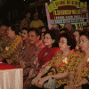
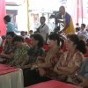

Kegiatan
Skip to content
Jump to main navigation and login
Nav view search
Navigation
Search

HUT KE 60 TK SD KUNCUP MELATI
(2)
HUT KE 60 TK - SD KUNCUP MELATI, 7 PEB 2010
(17)
INSPIRASI DORCE TRANS 7
(5)
Kegiatan MOBIL PINTAR 10 PEB 2009
(8)
KUNJUNGAN DUBES RRC
(6)
KUNJUNGAN TIM KAJIAN DEWAN PERTIMBANGAN PRESIDEN, 13 SEPTEMBER 2011
(1)
LIVE TVRI, ACARA KUAS
(1)

PELEPASAN BALON DALAM RANGKA HUT KE 60 TK - SD KUNCUP MELATI
(9)
PEMBAGIAN ANGPAO DALAM RANGKA CAP GO MEH 2011
(4)
PEMBAGIAN ANGPAO PERAYAAN CAP GO MEH 2010
(4)
PEMBAGIAN SUSU MILO
(1)
PEMBUKAAN-NAMA-PERPUSTAKAAN-SADEWA
(4)
PENYERAHAN REKOR MURI
(3)
PROGRAM DOLANAN NYAMBI SINAU SEMARANG CAKRA TV
(6)
TARIAN NUSANTARA DI PRPP IMLEK DALAM KEBHINEKAAN INDONESIA
(4)
TEMU ALLUMNI DALAM RANGKA HUT KE 60
(3)
VISIT COMPANY, DI HARIAN SUARA MERDEKA, PT. COCA COLA, PT. INDOFOOD SUKSES MAKMUR TBK, KAMIS, 18 JUNI
(4)
Kunjungan Universitas UNIKA Soegijapranata, Association Of Southeast and East Asian Catholic College and Universities ( ASEACCU ), 25-26 Agustus 2015
(14)
Kunjungan Bank PERMATA, 15 September 2015
(8)
MAKAN SIANG BERSAMA, 6 OKTOBER 2015
(5)
Powered by
Phoca Gallery